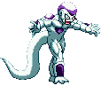
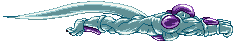

activate Sadism Mode (LV2)
Activating Sanity Mode makes Freeza a bit more dangerous and ferocious! This changes a few things, gameplay-wise.
- At activation, you will see an empty Sadism Bar (which is divided into 3 sections for Lv1, Lv2 and Lv3) and a red name added to the screen.
- Freeza gains access to the Dash Teleports, Torture Gun and Death Charge.
- Using Torture Gun gradually fills the Sadism Bar.
- Performing a Super move will cancel Sadism Mode.
- Tail Press Nightmare costs Lv2 instead of Lv3 and also cancels the mode.
- Depending if you're on Lv1, Lv2 or Lv3 of the Sadism Bar when you activate the Tail Press Nightmare, Freeza will perform a Finisher at the end of it .
- At activation, you will see an empty Sadism Bar (which is divided into 3 sections for Lv1, Lv2 and Lv3) and a red name added to the screen.
- Freeza gains access to the Dash Teleports, Torture Gun and Death Charge.
- Using Torture Gun gradually fills the Sadism Bar.
- Performing a Super move will cancel Sadism Mode.
- Tail Press Nightmare costs Lv2 instead of Lv3 and also cancels the mode.
- Depending if you're on Lv1, Lv2 or Lv3 of the Sadism Bar when you activate the Tail Press Nightmare, Freeza will perform a Finisher at the end of it .


Dash Teleport
During Sadism Mode, Freeza's (ground) dashes will change from the run and the backflip
to short-range teleports. The most useful would be the forward version; when you perform this close enough to the opponent,
Freeza will appear on the other side of them. Since it has the dash command, you can chain these off the Focus Attack.
The downward teleport can only be performed while in the air, and will teleport Freeza to the ground nearly instantly,
tricking the opponent with your swiftness.


Torture Gun
A move unique to the Sadism Mode, Freeza fires very short-range blasts which he can rapid-fire, catching the opponent in his trap.
Due to the combo scaler, they become less and less damaging the more times you hit with the blasts. You can supercancel off this.


Death Charge
A stronger version of the Head Charge and based off Freeza's Desperation Move in DBZ Hyper Dimension.
He charges forward with his arms in front, surrounded by energy. It takes it's power from the Sadism Bar, so the more that Bar
is filled, the more damaging the move will become.